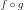
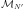

FieldToFieldConnection¶
- class FieldToFieldConnection(*args)¶
Composition function  where
 acts on fields and
acts on fields and  produces fields.
produces fields.- Available constructors:
FieldToPointConnection(f_FieldFunction, g_FieldFunction)
FieldToPointConnection(f_PointToField, g_FieldToPoint)
- Parameters
- f_FieldFunction, g_FieldFunction
FieldFunction Function that acts on fields and produces fields
- g_FieldToPoint
FieldToPointFunction Function that acts on fields and produces points
- f_PointToField
PointToFieldFunction Function that acts on points and produces points
- f_FieldFunction, g_FieldFunction
Notes
This class is a particular case of the general class
FieldFunction. Thus it doesn’t implement the gradient nor the hessian.Methods
__call__(*args)Call self as a function.
Get the number of calls of the function.
Accessor to the object's name.
Accessor to the function
of class FieldToPointFunction.getId()Accessor to the object's id.
Get the description of the input field values.
Get the dimension of the input field values.
Get the mesh associated to the input domain.
Accessor to the function
of class FieldFunction.getMarginal(*args)Get the marginal(s) at given indice(s).
getName()Accessor to the object's name.
Get the description of the output field values.
Get the dimension of the output field values.
Get the mesh associated to the output domain.
Accessor to the function
of class PointToFieldFunction.Accessor to the function
of class FieldFunction.Accessor to the object's shadowed id.
Accessor to the object's visibility state.
hasName()Test if the object is named.
Test if the object has a distinguishable name.
Whether the function acts point-wise.
setInputDescription(inputDescription)Set the description of the input field values.
setInputMesh(inputMesh)Set the mesh associated to the input domain.
setName(name)Accessor to the object's name.
setOutputDescription(outputDescription)Set the description of the output field values.
setOutputMesh(outputMesh)Set the mesh associated to the output domain.
setShadowedId(id)Accessor to the object's shadowed id.
setVisibility(visible)Accessor to the object's visibility state.
- __init__(*args)¶
- getCallsNumber()¶
Get the number of calls of the function.
- Returns
- callsNumberint
Counts the number of times the function has been called since its creation.
- getClassName()¶
Accessor to the object’s name.
- Returns
- class_namestr
The object class name (object.__class__.__name__).
- getFieldToPointFunction()¶
Accessor to the function
of class FieldToPointFunction.- Returns
- g
FieldToPointFunction The function
that acts on fields to produce points.
- g
- getId()¶
Accessor to the object’s id.
- Returns
- idint
Internal unique identifier.
- getInputDescription()¶
Get the description of the input field values.
- Returns
- inputDescription
Description Description of the input field values.
- inputDescription
- getInputDimension()¶
Get the dimension of the input field values.
- Returns
- dint
Dimension
 of the input field values.
of the input field values.
- getInputMesh()¶
Get the mesh associated to the input domain.
- Returns
- inputMesh
Mesh The input mesh .
- inputMesh
- getLeftFieldFunction()¶
Accessor to the function
of class FieldFunction.- Returns
- f
FieldFunction The function
that acts on fields to produce fields.
- f
- getMarginal(*args)¶
Get the marginal(s) at given indice(s).
- Parameters
- iint or list of ints,

Indice(s) of the marginal(s) to be extracted.
- iint or list of ints,
- Returns
- fieldFunction
FieldFunction The initial function restricted to the concerned marginal(s) at the indice(s)
 .
.
- fieldFunction
- getName()¶
Accessor to the object’s name.
- Returns
- namestr
The name of the object.
- getOutputDescription()¶
Get the description of the output field values.
- Returns
- outputDescription
Description Description of the output field values.
- outputDescription
- getOutputDimension()¶
Get the dimension of the output field values.
- Returns
- d’int
Dimension
 of the output field values.
of the output field values.
- getOutputMesh()¶
Get the mesh associated to the output domain.
- Returns
- outputMesh
Mesh The output mesh .
- outputMesh
- getPointToFieldFunction()¶
Accessor to the function
of class PointToFieldFunction.- Returns
- f
PointToFieldFunction The function
that acts on points to produce fields.
- f
- getRightFieldFunction()¶
Accessor to the function
of class FieldFunction.- Returns
- g
FieldFunction The function
that acts on fields to produce fields.
- g
- getShadowedId()¶
Accessor to the object’s shadowed id.
- Returns
- idint
Internal unique identifier.
- getVisibility()¶
Accessor to the object’s visibility state.
- Returns
- visiblebool
Visibility flag.
- hasName()¶
Test if the object is named.
- Returns
- hasNamebool
True if the name is not empty.
- hasVisibleName()¶
Test if the object has a distinguishable name.
- Returns
- hasVisibleNamebool
True if the name is not empty and not the default one.
- isActingPointwise()¶
Whether the function acts point-wise.
- Returns
- pointWisebool
Returns true if the function evaluation at each vertex depends only on the vertex or the value at the vertex.
- setInputDescription(inputDescription)¶
Set the description of the input field values.
- Parameters
- inputDescriptionsequence of str
Description of the input field values.
- setInputMesh(inputMesh)¶
Set the mesh associated to the input domain.
- Parameters
- inputMesh
Mesh The input mesh .
- inputMesh
- setName(name)¶
Accessor to the object’s name.
- Parameters
- namestr
The name of the object.
- setOutputDescription(outputDescription)¶
Set the description of the output field values.
- Parameters
- outputDescriptionsequence of str
Describes the outputs of the output field values.
- setOutputMesh(outputMesh)¶
Set the mesh associated to the output domain.
- Parameters
- outputMesh
Mesh The output mesh .
- outputMesh
- setShadowedId(id)¶
Accessor to the object’s shadowed id.
- Parameters
- idint
Internal unique identifier.
- setVisibility(visible)¶
Accessor to the object’s visibility state.
- Parameters
- visiblebool
Visibility flag.